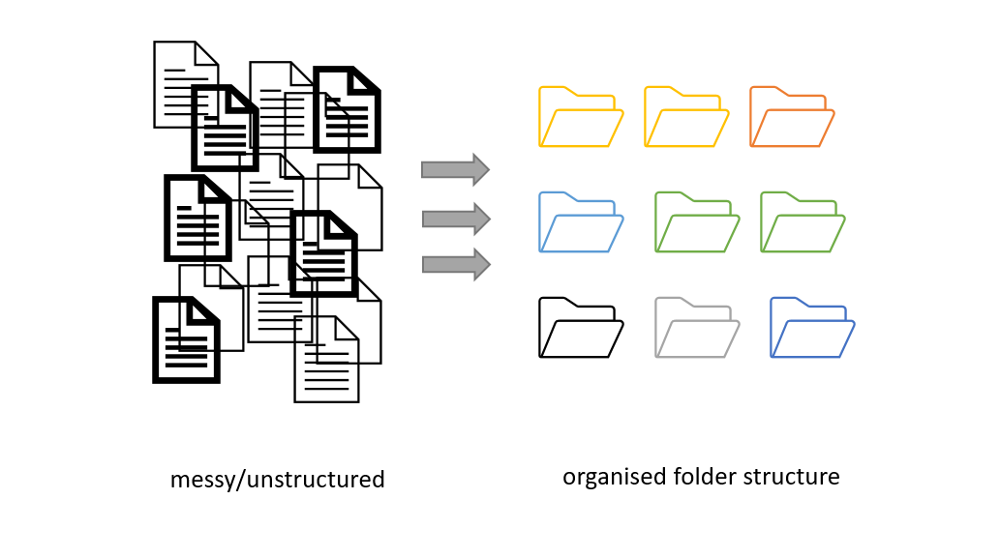

Working with files
Last updated on 2024-03-22 | Edit this page
Overview
Questions
- How should I name my files?
- How does folder organisation help me
Objectives
- Understand elements of good naming strategy
- Evaluate pros and cons of different project organizations
- Explain how file management helps in being FAIR
Project organization: planning file names and folder structure
(3 min teaching)
Before you even start collecting or working with data you should decide how to structure and name files and folders. This will:
- allow for standardized data collection and analysis by many team members.
- make it easier for the researcher to determine where files should be saved.
- avoid file duplication.
- help make retrieval and archiving more efficient.
Figure credits: Andrés Romanowski
Consistent naming and organization of files in folders has two main goals:
- quick to find files
- ability to tell the file content without opening it
Naming your files (and folders)
One important and often overlooked practice of organizing, sharing,
and keeping track of data files is standardized naming.
It is important to develop naming conventions which permit the encoding
of experimental factors which are important to the project.
File (folder) names should be consistent, meaningful to you and your collaborators, allow you to easily find what you are looking for, give you a sense of the content without opening the file, and allow you to easily identify if something is missing.
SH
Example
`LD_phyA_off_t04_2020-08-12.norm.xlsx`
could be a file that contains:
* normalized data (norm),
* from experiment in long day (LD)
* for genotype phyA
* with media without sucrose (off)
* at timepoint 4 (t04)Exercise 1: Naming and sorting (12 min - 3 min explanation)
(5 min breakout + 5 discussing)
Have a look at the example files from a project, similar to the one from the previous metadata episode.
All the files have been sorted by name and demonstrate consequences of different naming strategies.
For your information, to encode experimental details the following conventions were taken:
- phyB/phyA are sample genotypes
- sXX is the sample number
- LD/SD are different light conditions (long or short day)
- on/off are different media (on sucrose, off sucrose)
- measurement date
- other details are timepoint and raw or normalized data
2020-07-14_s12_phyB_on_SD_t04.raw.xlsx
2020-07-14_s1_phyA_on_LD_t05.raw.xlsx
2020-07-14_s2_phyB_on_SD_t11.raw.xlsx
2020-08-12_s03_phyA_on_LD_t03.raw.xlsx
2020-08-12_s12_phyB_on_LD_t01.raw.xlsx
2020-08-13_s01_phyB_on_SD_t02.raw.xlsx
2020-7-12_s2_phyB_on_SD_t01.raw.xlsx
AUG-13_phyB_on_LD_s1_t11.raw.xlsx
JUL-31_phyB_on_LD_s1_t03.raw.xlsx
LD_phyA_off_t04_2020-08-12.norm.xlsx
LD_phyA_on_t04_2020-07-14.norm.xlsx
LD_phyB_off_t04_2020-08-12.norm.xlsx
LD_phyB_on_t04_2020-07-14.norm.xlsx
SD_phyB_off_t04_2020-08-13.norm.xlsx
SD_phyB_on_t04_2020-07-12.norm.xlsx
SD_phya_off_t04_2020-08-13.norm.xlsx
SD_phya_ons_t04_2020-07-12.norm.xlsx
ld_phyA_ons_t04_2020-08-12.norm.xlsx - What are the problems with having the date first?
- How do different date formats behave once sorted?
- Can you tell the importance of a leading 0 (zeros)?
- Is it equally easy to find all data from LD conditions as ON media?
- Can you spot the problem when using different cases (upper/lower)?
- Do you see benefits of keeping consistent lengths of the naming conventions?
- Do you see what happens when you mix conventions?
- Using dates up front makes it difficult to quickly find data for particular conditions or genotypes. It also masks the “logical” order of samples or timepoints.
- Named months break the “expected” sorting, same as dates without leading 0
- Without leading zeros, ‘s12’ appear before s1 and s2
- the first (and second) part of the name are easiest to spot
- the last file is also from LD conditions, but appears after SD, same with ‘phya’ genotypes
- the last 3 file names are easiest to read as all parts appear on top of each other due to the same 3 letter-length codes ons and off
- The lack of consistency makes it very difficult to get data from related samples/conditions.
(7 min teaching)
Some things to take into account to decide on your naming convention are:
- Does your convention make your files easy to sort and find (e.g. by important features)?
- Include parameters that are as descriptive as possible (i.e.: project, experiment, researcher, sample, organism, date/range, data type, method).
- Defined a standard vocabulary (shortcuts) for parameters and document any abbreviation.
- Decide which elements go in which order.
- Decide the convention when to use symbols, capitals, hyphens (e.g kebab-case, CamelCase, or snake_case).
- Define a maximum name length. Aim for filenames no longer than ~30 characters.
Do’s:
- for dates use the YYYY-MM-DD standard and place at the end of the file UNLESS you need to organize your files chronologically
- include version number (if applicable), use leading zeroes (i.e.: v005 instead of v5).
- make sure the 3-letter file format extension is present at the end of the name (e.g. .doc, .xls, .mov, .tif)
- add a PROJECT_STRUCTURE (README) file in your top directory which details your naming convention, directory structure and abbreviations
Don’ts:
- avoid using spaces (use _ or - instead)
- avoid dots, commas and special characters (e.g. ~ ! @ # $ % ^ & * ( ) ` ; < > ? , [ ] { } ‘ “)
- avoid using language specific characters (e.g óężé), unfortunately they still cause problems with most software or between operating systems (OS)
- avoid long names
- avoid repetition, e.g if directory name is Electron_Microscopy_Images, and file ELN_MI_IMG_20200101.img then ELN_MI_IMG is redundant
- avoid deep paths with long names (i.e. deeply nested folders with long names) as archiving or moving between OS may fail
Challenge
## Exercise 2: A good name (3 min)
Select which file options adhere the best to the presented recommendations:
- analysis-20210906.xlsx
- rna-levels-by-site.v002.xlsx
- analysis of rna levels from 5Aug2021.xlsx
- 20210906-birds-count-EDI.csv
- birds.csv
- birds-count&diversity EDI 2021-09-06.csv
- 2020-7-12_s2_phyB_+_SD_t01.raw.xlsx
- ld_phyA_on_s02-t01_2020-07-12.norm.xlsx
- ld_phya_ons_02-01_2020-07-12.norm.xlsx
- 1 b)
- 2 a)
- 3 b)
If adding all the relevant details to file names makes them too long, it is often a signal that you should use folders to organize the files and capture some of those parameters.
Exercise 3: Folders vs Files
(5 min)
Have a look as these two different organization strategies:
|– Project
|– |– arab_LD_phyA_off_t04_2020-08-12.metab.xlsx|– Project
|– |– arabidopsis
|– |– |– long_day
|– |– |– |– phyA
|– |– |– |– |– off_sucrose_2020-08-12
|– |– |– |– |– |– t04.metab.xlsx
Can you think of scenarios in which one is better suited than other? Hint: think of other files that could be present as well.
The first strategies, can work very well if the project has only few files, so all of them can quickly be accessed (no need to change folders) and the different parameters are easily visible. For example a couple of conditions, couple of genotypes or species
|– Project
|– |– arab_LD_phyA_off_t04_2020-08-12.metab.xlsx
|– |– arab_LD_WILD_off_t03_2020-08-11.metab.xlsx
|– |– arab_SD_phyA_off_t01_2020-05-12.metab.xlsx
|– |– arab_SD_WILD_off_t02_2020-05-11.metab.xlsx
|– |– rice_LD_phyA_off_t05_2020-05-02.metab.xlsx
|– |– rice_LD_WILD_off_t06_2020-05-02.metab.xlsx
|– |– rice_SD_phyA_off_t07_2020-06-02.metab.xlsx
|– |– rice_SD_WILD_off_t08_2020-06-02.metab.xlsx
The second strategy works better if we have a lot of individual files for each parameter. For example, imagine the metabolites are measured hourly throughout the day, and there are ten different genotypes, two species and 4 light conditions. You would not want to have all the 2000 files in one folder.
|– Project
|– |– arabidopsis
|– |– |– long_day
|– |– |– |– phyA
|– |– |– |– |– off_sucrose_2020-08-12
|– |– |– |– |– |– t01.metab.xlsx
|– |– |– |– |– |– t02.metab.xlsx
|– |– |– |– |– |– t03.metab.xlsx
|– |– |– |– |– |– …
|– |– |– |– |– |– t23.metab.xlsx
|– |– |– |– |– |– t24.metab.xlsx
|– |– rice
|– |– |– long_day
|– |– |– |– phyA
|– |– |– |– |– off_sucrose_2020-06-03
|– |– |– |– |– |– t01.metab.xlsx
|– |– |– |– |– |– …
|– |– |– |– |– |– t24.metab.xlsx
(4 min teaching)
Must do: Document your strategy
Regardless of whether you are using long filenames or incorporating
some of the variables within the folder structure, document it!
Always include a PROJECT_STRUCTURE (or README) file describing your file
naming and folder organisation conventions.
Strategies to set up a clear folder structure
(3 min teaching)
Establishing a system that allows you to access your files, avoid duplication and ensure that your data can be easily found needs planning.
You can start by developing a logical folder structure. To do so, you need to take into account the following suggestions:
- Use folders to group related files. A single folder will make it easy to locate them.
- Name folders appropriately: use descriptive names after the areas of work to which they relate.
- Structure folders hierarchically: use broader topics for your main folders and increase in specificity as you go down the hierarchy.
- Be consistent: agree on a naming convention from the outset of your research project.
Exercise 4: Typical folder organizations
(5 min breakout + 7 explanation)
Have a look at the four different folder structures.
 Figure credits: Ines Boehm
Figure credits: Ines Boehm
The first two: a) b) are recommended for computing, the other two: c) d) are for more wet/biological projects.
- Which one is the most similar to your project structure?
- When/why would you use a) and when/why b)
- When/why would you use c) and when/why d)
Firstly, the root directory contains a README file that provides an overview of the project as a whole, a CITATION file that explains how to reference it and a LICENSE, all three make it REUSABLE.
The a) structure is recommended by the Good enough
practices in scientific computing paper.
This project structure clearly separates the inputs (the raw data) from
the outputs (the results) and the analysis procedure (python code).
Following the same convention (like src folder for code) makes it easy
to find interesting elements, for example the raw data or particular
plotting procedure. Good for sharing analysis project, also for
pipelines where one set of inputs generated the set of outputs in the
step by step manner.
The b) structure is called “Organized by analysis” or “by figure”. As the name suggest it may be recommended to share data underling a publication. In that way each paper figure is represented by its raw data, processing scripts and the final results and figure plots. It is also well suited if each analysis deals with different data type or different aspect of it. When compared to ‘a)’ it makes easier to match the required inputs with the computational procedures.
The structure similar to c) is recommended for Brain Imaging Data Structure BIDS, as it is organized by “patient” (in this case patient was replaced by pig :) ) and type of scans. Here the focus is on individual subject / samples, for which various data was obtained.
Structured d) is useful when we are interested in outcomes of experimental conditions (here drug treatments). The same set of samples/subjects/genotypes are exposed to different experimental variables/conditions and the data are probably compared between all the samples at the same conditions.
(4 min teaching) :::::::::::::::::::::::::::::::::::::::::::::::: spoiler
(Optional) Good enough practices for scientific computing recommendations
The Good enough practices in scientific computing paper makes the following simple recommendations:
- Put each project in its own directory, which is named after the project
- Put text documents associated with the project in the ‘doc’ directory
- Put raw data and metadata in a ‘data’ directory
- Put files generated during cleanup and analysis in a ‘results’ directory
- Put project source code in the ‘src’ directory
- Put compiled programs in the ‘bin’ directory
- Name all files to reflect their content or function:
- Use names such as ‘bird_count_table.csv’, ‘notebook.md’, or ‘summarized_results.csv’.
- Do not use sequential numbers (e.g., result1.csv, result2.csv) or a location in a final manuscript (e.g., fig_3_a.png), since those numbers will almost certainly change as the project evolves.
:::::::::::::::::::::::::::::::::::::::::::::::
After you have a plan
Your naming conventions might need some adjustments as the project progresses. Don’t despair, just document it!
If you change the strategy document it in PROJECT_STRUCTURE (or README) stating why you made the change and when.
Update the locations and names of files which followed the old convention
Backing up your project files and folders
- Back up (almost) everything created by a human being or recorded by a machine as soon as it is created.
- Always backup your files in 3 places, at least one should be off-site.
- USB sticks are a failure-prone option and are not a valid solution for backup of scientific data
- A robust backup cannot be achieved manually
Do you know how and where to keep 3 copies of your data which are always up to date?
Secure data preservation is very difficult to achieve without institutional support and know-how.
One option is cloud storage, but not all data may be put in a public cloud.
You should always check your institutional guidelines and what solutions are available in your organisation.
Project file organization and FAIR guidelines
Exercise 5: FAIR Files (3 minutes)
Choose 3 main benefits of a good strategy for folder organisation and naming conventions.
- Makes data more findable
- Aids in making data more reproducible - projects can be copied easily
- Raw data can be reanalysed multiple times
- Naming conventions can be read automatically
- Easy to understand content by name, less misunderstandings
- Easier to find and share data with others
- Easy inspection of the project progress (present files)
- Fewer meetings required when sharing data
- Time saving
Have you realised that the above suggestions mean including valuable metadata as part of your folder structure and file names?
Where to next
Bulk renaming of files can be done with the software such as:
- Ant Renamer
- RenameIT
- Rename4Mac.
Attribution
Content of this episode was created using the following references as inspiration: